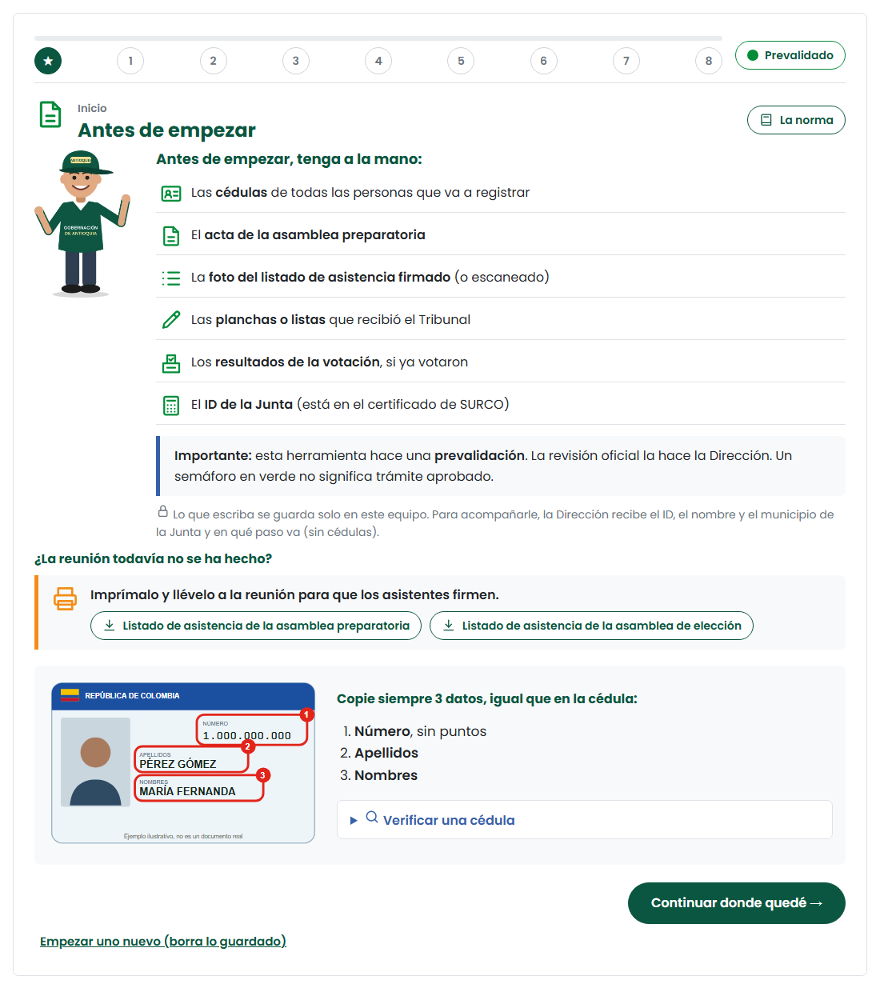

¿Para qué sirve el formulario?
Formatos en papel, datos copiados varias veces y errores que se descubrían al radicar.
Un solo formulario que avisa del error en el momento y llena los formatos oficiales en Word.
Menos devoluciones y una posesión más rápida.
Antes de empezar, tenga a la mano

- Las cédulas de todas las personas.
- El acta de la asamblea preparatoria.
- La foto del listado de asistencia firmado (o escaneado).
- Las planchas o listas que recibió el Tribunal.
- Los resultados de la votación, si ya votaron.
- El ID de la Junta: está en el certificado de SURCO.

Su avance se guarda en este equipo. Puede seguir otro día con «Continuar donde quedé».
🪪 La cédula: 3 datos, igual que en el documento
Solo números, sin puntos ni espacios. La página quita los puntos sola.
Tal como están en la cédula, con tildes.
Completos y en el mismo orden.

Una cifra cambiada es otra persona. La Dirección no podrá validarla, no se detectará la doble afiliación y el registro se devolverá.
Si una cédula tiene menos de 6 números, el semáforo se pone en amarillo: algunas cédulas antiguas son así. Verifíquela y márquela como revisada.
🔎 Verificar una cédula
¿Está afiliada a la Junta? Evita la doble afiliación.
Quiénes son los dignatarios actuales.
Confirma el nombre completo de la persona.
Antecedentes judiciales.
El botón «Verificar una cédula» abre estas consultas en otra pestaña. Lo escrito no se pierde.
✅ Antes de terminar
- Leí cada cédula en voz alta mientras la comparaba con el documento.
- Otra persona revisó las cédulas.
- Consulté en SURCO a quienes tenía duda.